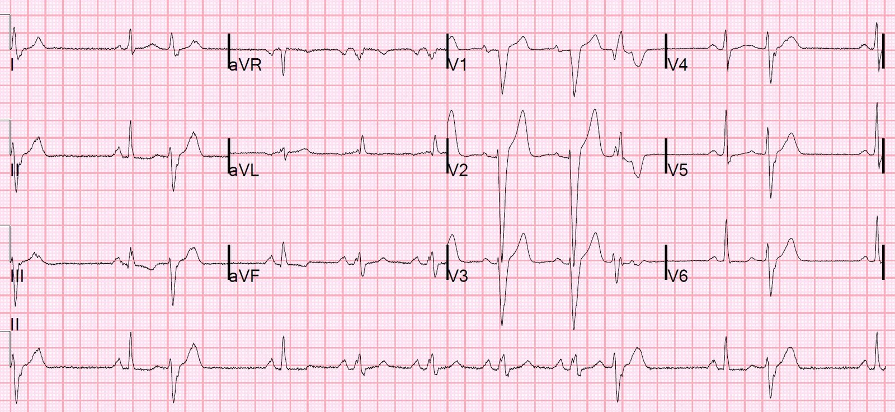
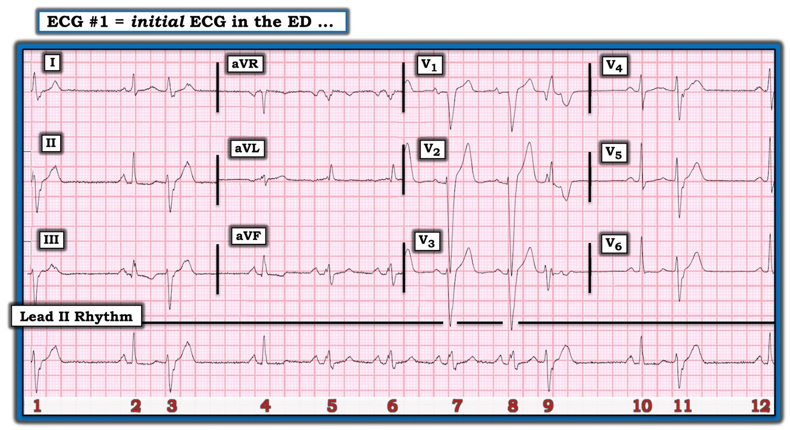
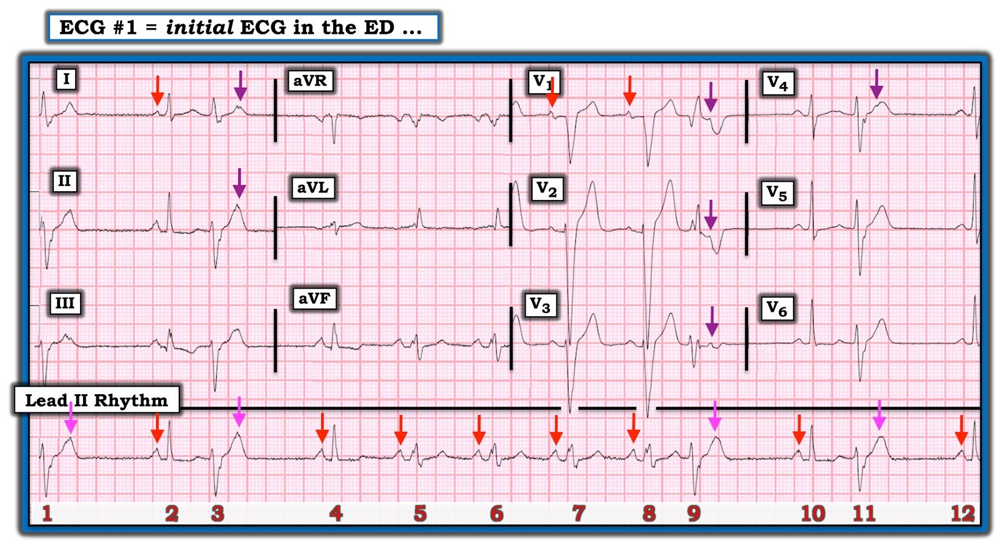
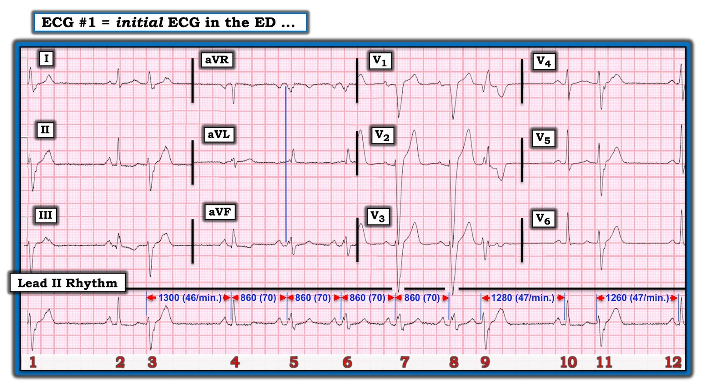

22/04/2020 — Một ca nhanh và dễ, nhưng thú vị: vì sao có 3 hình thái QRS khác nhau?
Bản dịch tiếng Việt của bài "A quick and easy, but interesting, case: why 3 different QRS morphologies?" – Dr. Smith’s ECG Blog. Giữ nguyên toàn bộ 6 hình ảnh của bản gốc.
Một bác sĩ nội trú (resident) rất giỏi của tôi đã gửi cho tôi điện tâm đồ này.
Bệnh nhân có “các triệu chứng ở ngực không đặc hiệu, lo rằng mình bị viêm phổi. Bệnh nhân không bị viêm phổi.”
Đây là điện tâm đồ:


Bác sĩ nội trú viết: Bệnh nhân có 3 hình thái QRS khác nhau:, 1. Một loại trông hẹp 2. Một loại trông như LBBB 3. Một loại trông như RBBB. Khoa tim mạch gọi chúng là PVC trong ghi chú của họ, và tôi nghĩ các hình thái trông như RBBB là PVC kèm khoảng nghỉ bù, nhưng các nhát dạng LBBB thì rõ ràng là không phải.
Đây là diễn giải của tôi:
Ở tần số
tim bình thường, bệnh nhân có blốc nhánh trái. Nhưng
nhánh trái này có thời kỳ trơ dài. Vì vậy, mỗi khi nhát kế tiếp
đến sớm hơn sau nhát trước, sẽ có blốc nhánh
trái. Mỗi khi nhát kế tiếp đến muộn hơn sau
nhát trước, sẽ có dẫn truyền bình thường.
Đó là chỗ PVC phát huy
vai trò: mỗi PVC được theo sau bởi một khoảng nghỉ bù dài,
cho nhánh trái thời gian để tái cực.
PVC xuất phát từ thất trái và có hình thái RBBB.
LBBB là do thời kỳ trơ dài trong nhịp xoang bình thường ở tần số 75 (khoảng RR 800 ms, dưới 1 giây)
Dẫn truyền bình thường xuất hiện sau một khoảng RR dài do khoảng nghỉ bù (dài hơn 1 giây).

===================================
BÌNH LUẬN CỦA TÔI, bởi KEN GRAUER, MD (22/4/2020):
===================================
— Một ví dụ thú vị về BBB liên quan tần số (rate-related BBB):
Tôi RẤT THÍCH ca này của Dr. Smith — vì nó làm nổi bật một hiện tượng quan trọng (dù không quá thường gặp), có thể trở nên vô giá trong việc giải thích vì sao một loạt nhát QRS rộng không có nguồn gốc từ thất. Bệnh nhân trong ca này đến khoa cấp cứu (ED) với bản ghi 12 chuyển đạo như trong Hình 1:
- Thông tin lâm sàng duy nhất mà chúng ta được cung cấp là bệnh nhân này có “các triệu chứng ở ngực không đặc hiệu” mà bà nghĩ là do viêm phổi. Nhưng bà không bị viêm phổi … Và chúng ta không biết tuổi của bệnh nhân (điều này có ý nghĩa trong việc dự đoán khả năng có bệnh tim nền).


Như Dr. Smith đã chỉ ra — MẤU CHỐT để xác định nguyên nhân của 3 hình thái QRS khác nhau mà chúng ta thấy trong điện tâm đồ #1 nằm ở các khoảng R-R đi trước mỗi nhát trong bản ghi này.
- Tôi tập trung Bình luận của tôi vào một số khía cạnh khác của ca này mà tôi thấy thú vị.
CÂU HỎI:
- Có LBBB (blốc nhánh trái – Left Bundle Branch Block) trong Hình 1 không?
- Nếu có — ý nghĩa lâm sàng của chẩn đoán dạng blốc dẫn truyền này là GÌ?
- Câu hỏi Điểm cộng: Các sóng P xoang đều có tiếp diễn suốt toàn bộ bản ghi không? (tức là, có BAO NHIÊU sóng P xoang trong dải nhịp chuyển đạo II dài?). Và — câu trả lời cho câu hỏi này giúp xác nhận nguyên nhân của các nhát #3, 9 và 11 như thế nào?
SUY NGHĨ CỦA TÔI về điện tâm đồ #1: Trước hết tập trung vào dải nhịp chuyển đạo II dài ở cuối bản ghi — nhịp nền trong Hình 1 là nhịp xoang với tần số ~70/phút. Thực ra có sự thay đổi nhẹ khoảng P-P trong bản ghi này — dù không đủ (tức là, không ≥0.12 giây) để được xếp là “loạn nhịp” xoang.
- Tôi đã đánh dấu các sóng P xoang trong Hình 2. Các mũi tên ĐỎ chỉ các sóng P xoang rõ ràng — dương với khoảng PR hằng định ở chuyển đạo II. Các mũi tên màu khác biểu thị các sóng P xoang không rõ ràng bằng.
- Tôi đã thêm các mũi tên HỒNG vào dải nhịp chuyển đạo II dài để chỉ các sóng P xoang làm khía (biến dạng) sóng T của các nhát #1, 3, 9 và 11. Lý do chúng ta biết các mũi tên HỒNG này chỉ sự xuất hiện của các sóng P xoang đúng lúc — là dù bị sóng T của các nhát #1, 3, 9 và 11 che khuất một phần — i) Compa đo cho chúng ta biết các sóng P xoang đang tiếp diễn phải xuất hiện chính xác tại vị trí tôi đặt các mũi tên HỒNG ; ii) có một khía nổi bật làm nhọn đỉnh 2 sóng T đầu tiên trong số này — với hình dạng hơi khác (tức là, tròn hơn) ở đỉnh sóng T của các nhát #9 và 11 (đúng như ta dự đoán khi khoảng P-P xoang thay đổi nhẹ, như chúng ta thấy ở đây); và, iii) các mũi tên TÍM ở một số chuyển đạo ghi đồng thời được chọn cho thấy rõ hơn “khía tố cáo” (telltale notching) của các sóng P bị che khuất một phần nằm trong sóng T của các nhát #3, 9 và 11.
- ĐIỂM THEN CHỐT (PEARL) #1: Lý do việc xác lập rằng các sóng P xoang tiếp diễn suốt toàn bộ dải nhịp chuyển đạo II dài là hữu ích về lâm sàng (tức là, có tổng cộng 12 sóng P xoang trong dải nhịp này) — là dấu hiệu này xác nhận rằng các nhát #1, 3, 9 và 11 phải có nguồn gốc từ thất. Nghĩa là, vì nhịp xoang nền không bị xáo trộn suốt dải nhịp chuyển đạo II dài — cách giải thích hợp lý duy nhất cho việc các nhát #3, 9 và 11 có thể xuất hiện sớm — là các nhát này phải phát sinh từ “bên dưới” (tức là, từ thất). Chúng không thể là PAC hay PJC dẫn truyền lệch hướng — vì cả hai loại nhát đến sớm này đều sẽ “đặt lại” (reset) chu kỳ xoang!
- LƯU Ý: Rõ ràng, chúng ta đã biết từ điện tâm đồ #1 rằng các nhát #1, 3, 9 và 11 có nguồn gốc từ thất — vì các nhát này rộng, không có sóng P sớm đi trước, và phức bộ QRS của chúng trông rất khác so với các nhát xoang dẫn truyền bình thường (tức là, hẹp) #2, 4, 10 và 12. Ý của tôi khi trình bày Điểm then chốt #1 — là đôi khi bạn sẽ không thể chắc chắn về nguồn gốc của một nhát QRS rộng đến sớm — và việc nhận ra (bằng cách dùng compa đo) rằng nhịp xoang nền vẫn tiếp diễn theo nhịp điệu đều đặn của nó bất chấp nhát rộng đến sớm sẽ xác nhận rằng nhát rộng đó đúng là có nguồn gốc từ thất.


Các nhát #1, 3, 9 và 11 phát sinh từ ĐÂU trong thất?
Dù hoàn toàn thừa nhận rằng câu trả lời cho câu hỏi này không quan trọng về mặt lâm sàng — vì mục đích “mài giũa” kỹ năng đọc điện tâm đồ của bạn — tôi nghĩ việc chỉ ra những điểm sau là có tính giáo dục:
- Các nhát #1, 3, 9 và 11 có hình thái RBBB rất điển hình — dưới dạng phức bộ QR ở V1 (và rR’ ở V2, rSr’ ở V3) — đi kèm với sóng R ban đầu khá hẹp và sóng S tận rộng ở các chuyển đạo bên I và V6.
- Thời gian QRS của các nhát rộng này không quá dài (tôi ước tính ~0.12 giây).
- Hình thái QRS của nhát #3 ở II và III hoàn toàn phù hợp với hình ảnh LAHB.
- ĐIỀU CỐT LÕI: Dấu hiệu các nhát đến sớm mà chúng ta biết có nguồn gốc từ thất — biểu hiện hình thái RBBB/LAHB rất điển hình, nhưng không quá rộng — gợi ý rằng các nhát #1, 3, 9 và 11 có lẽ là “nhát phân nhánh” (fascicular beats) phát sinh từ phân nhánh trái sau. LƯU Ý: Ý nghĩa lâm sàng của nhát phân nhánh giống như PVC — nên việc phân biệt giữa 2 dạng phức bộ thất đến sớm này sẽ không làm thay đổi xử trí ban đầu. Nhưng khái niệm sử dụng cả 12 chuyển đạo trên điện tâm đồ để đánh giá hình thái QRS thì hữu ích.
Còn dẫn truyền kiểu LBBB thì sao?
Như Dr. Smith đã chỉ ra — lý do các nhát #2, 4, 10 và 12 được dẫn truyền bình thường (tức là, với phức bộ QRS hẹp) — trong khi các nhát dẫn truyền từ xoang #5, 6, 7 và 8 được dẫn truyền với phức bộ QRS rộng — là vì khoảng R-R đi trước các nhát rộng dẫn truyền từ xoang này ngắn hơn khoảng R-R đi trước các nhát hẹp dẫn truyền từ xoang #2, 4, 10 và 12 (Hình 3):
- Hình thái QRS của các nhát rộng dẫn truyền từ xoang (tức là, các nhát #5, 6, 7 và 8) phù hợp với dẫn truyền kiểu LBBB. Điều này dễ nhận thấy nhất ở các chuyển đạo ghi đồng thời V1, V2 và V3 — chủ yếu âm (với nhánh xuống của sóng S thẳng và rất dốc), là đặc điểm rất điển hình của dẫn truyền kiểu LBBB. LƯU Ý: Mặc dù phức bộ QRS của các nhát #5 và 6 ở aVL trông hẹp một cách đánh lừa — đó là vì phần đầu của phức bộ QRS của các nhát #5 và 6 ở aVL nằm trên đường nền (Xem đường thẳng đứng màu XANH ở aVR, aVL và aVF bắt đầu tại điểm khởi đầu phức bộ QRS). Do đó, thực sự có phức bộ QRS dương hoàn toàn ở aVL đối với các nhát rộng dẫn truyền từ xoang, đúng như dự đoán với dẫn truyền kiểu LBBB (dù một phần QRS ở aVL dẹt và nằm trên đường nền).
- Hiện tượng dẫn truyền blốc nhánh từng lúc trong những giai đoạn tần số tim tăng được gọi là BBB liên quan tần số. Dù đúng là khoảng R-R dài hơn đi trước nhát #4 kéo dài thời kỳ trơ tương đối (RRP) tiếp theo (thông qua hiện tượng Ashman) — tôi vẫn cho rằng ngay cả một RRP kéo dài cũng phải kết thúc trước 860 msec. (tức là, Khi thấy dẫn truyền kiểu BBB hoặc blốc phân nhánh sau một khoảng R-R đi trước ngắn thì chúng ta mới nói là có dẫn truyền lệch hướng).


ĐIỂM THEN CHỐT (PEARL) #2: Theo kinh nghiệm của tôi, hiện tượng BBB liên quan tần số thực sự là không thường gặp. Nó thường khá khó nhận ra. Lý do chẩn đoán này khó nắm bắt — là phần lớn thời gian, phức bộ QRS ở bệnh nhân có BBB từng lúc, liên quan tần số sẽ hẹp — và, các thông số mà theo đó BBB từng lúc xuất hiện có thể thay đổi.
- Điểm MẤU CHỐT: Tần số khởi phát dẫn truyền kiểu BBB thường không giống với tần số mà tại đó dẫn truyền bình thường trở lại. Ví dụ — trong Hình 3 — chúng ta thấy dẫn truyền kiểu LBBB khởi phát ở nhát #5 (khoảng R-R đi trước = 860 msec, tương ứng với tần số tim ~70/phút). Giả sử 70 nhát/phút là tần số “khởi phát” của dẫn truyền BBB liên quan tần số — thì tần số tim có thể cần giảm xuống thấp hơn hẳn 70/phút thì BBB liên quan tần số mới hết (có lẽ tới 60/phút hoặc thậm chí chậm hơn). Do đó, tần số khởi phát của BBB liên quan tần số không nhất thiết bằng tần số kết thúc của rối loạn dẫn truyền này! Điều làm việc nhận ra hiện tượng này thêm phức tạp là thực tế lâm sàng rằng các tình trạng khác (tức là, thiếu máu cục bộ, giảm oxy máu, rối loạn điện giải, v.v.) đều có thể góp phần làm thay đổi các thông số tần số khởi phát/kết thúc.
- LƯU Ý: Tôi chưa chứng minh một cách chắc chắn rằng có BBB liên quan tần số trong Hình 3. Đó chỉ là nghi ngờ của tôi. Chúng ta không được cung cấp bản ghi nền nào không có PVC (và không có thay đổi đột ngột về tần số tim). Chúng ta cũng không được cung cấp các bản ghi khác cho thấy dẫn truyền bình thường (QRS hẹp) ở tần số tim chậm hơn — trong đó nhịp xoang tăng tốc không liên quan đến PVC dẫn đến dẫn truyền kiểu BBB. Theo kinh nghiệm của tôi — thường cần theo dõi kéo dài một bệnh nhân theo thời gian để chứng minh rằng nguyên nhân QRS giãn rộng là BBB liên quan tần số thực sự.
- VỀ MẶT LÂM SÀNG — Việc biết một bệnh nhân có BBB từng lúc liên quan tần số hữu ích nhất khi nhịp nền là AFib — vì trong trường hợp này không có sóng P “tố cáo” nào — và có thể dễ nhầm BBB liên quan tần số với VT hơi không đều (BẤM VÀO ĐÂY để xem một ví dụ về điều này).
ĐIỂM THEN CHỐT (PEARL) #3: Ý nghĩa lâm sàng của BBB từng lúc, liên quan tần số tương tự ý nghĩa lâm sàng của BBB vĩnh viễn.
- Nhìn chung — ý nghĩa của bất kỳ rối loạn dẫn truyền nào phụ thuộc vào bối cảnh lâm sàng mà nó xảy ra. Trong khi việc tình cờ phát hiện blốc hai phân nhánh lâu năm như RBBB/LAHB ở một bệnh nhân cao tuổi không triệu chứng rõ ràng gợi ý có một bệnh tim nền nào đó — thì nguy cơ cần máy tạo nhịp vĩnh viễn không nhất thiết lớn đến vậy. Ngược lại — RBBB/LAHB mới xuất hiện ở bệnh nhân tắc LAD đoạn gần cấp tính mang nguy cơ cần tạo nhịp cấp cứu lớn hơn nhiều.
- Trong ca này — chúng ta không biết tuổi cũng như tiền sử bệnh của bệnh nhân. Nhưng, khác với RBBB hoàn toàn (đôi khi gặp ở bệnh nhân không có bệnh tim nền) — LBBB (dù vĩnh viễn hay từng lúc và liên quan tần số) hầu như không bao giờ xảy ra khi không có một dạng nào đó của bệnh tim nền.
- ĐIỂM THEN CHỐT (PEARL) #4: Xác định LVH trên điện tâm đồ rõ ràng khó hơn khi có LBBB — vì rối loạn dẫn truyền này làm thay đổi hoàn toàn trình tự khử cực và tái cực thất. Kết quả là — các “tiêu chuẩn thông thường” để chẩn đoán LVH trên điện tâm đồ khi QRS hẹp không còn giá trị khi có LBBB. Dù vậy, sự hiện diện của sóng S sâu rõ rệt ở một hoặc nhiều chuyển đạo phía trước (tức là, ≥25-30 mm) ở bệnh nhân LBBB — gợi ý mạnh có LVH (Lưu ý sóng S ở V2 của điện tâm đồ #1 sâu 32 mm!). Việc nhận ra bệnh nhân trong ca này còn có LVH là thêm một dấu hiệu chỉ điểm bệnh tim nền.
T.B. (P.S.): Giờ khi chúng ta cuối cùng đã xác định được nguyên nhân của từng hình thái trong 3 hình thái QRS khác nhau ở bản ghi này — chúng ta có thể chuyển sự chú ý sang đánh giá các bất thường nhĩ và thay đổi ST-T:
- Sóng P cao (tức là, ≥2.5 mm) và nhọn của các nhát xoang trong dải nhịp chuyển đạo II dài gợi ý RAA (bất thường nhĩ phải – Right Atrial Abnormality).
- Để đánh giá bất thường ST-T — tôi tập trung vào các nhát dẫn truyền từ xoang có phức bộ QRS hẹp (tức là, bình thường). Gồm nhát #2 (ở I, II, III) — nhát #4 (ở aVR, aVL, aVF) — và các nhát # 10 và 12 (ở V4, V5, V6). Xem các nhát này — tôi thấy ST-T dẹt không đặc hiệu, với ST chênh xuống nhẹ ở các chuyển đạo dưới-bên — nhưng không có thay đổi cấp tính.
Chúng tôi xin CẢM ƠN Dr. Smith đã trình bày ca bệnh thú vị này.